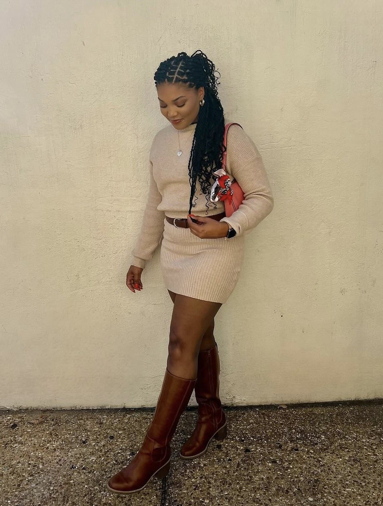

Montgomery Biscuits
Community and Fan Engagement Manager
About Sierra
A life built around connection, curiosity, creativity, and the confidence to try something new.

Sierra describes herself as outgoing and understanding, with a love for cultural experiences. Her curiosity and confidence show up in the way she approaches relationships, creative pursuits, and her career. She especially enjoys public speaking and the opportunity to hold an audience's attention.
Sierra describes her childhood as a protected environment where she had room to learn and grow within a strong, close-knit family. The skilled speakers in her family influenced her own appreciation for communication and self-expression. She went on to study communications with a focus in public relations at Auburn University at Montgomery (AUM). Ethics and Law was her favorite college course, and she views earning her degree as the foundation for a life of continuous learning.
While completing her degree, Sierra worked as a Community and Fan Engagement Manager for the Montgomery Biscuits, bringing together her interest in sports and her communication skills. After graduating, she worked as a Communications Specialist with the Alabama Securities Commission. She now works in a Charter School Program (CSP) grant community and communications role. Entering her career field immediately after college is one of the accomplishments she values most.
Sierra's interest in dance began when she watched dancers on MTV as a child and thought they were cool. Dance and gymnastics became outlets that combined artistic expression with discipline, and she also participated in college cheerleading. After experiencing major injuries, she learned the importance of patience during recovery.
An art history course sparked Sierra's interest in art and museums. She particularly admires Gary Chapman's work Mutter und Tochter. She enjoys historical fiction, including The Women, and is interested in the psychology and sociology behind true crime. One of her favorite travel memories is visiting Montana for a wedding, exploring Glacier National Park, and going up a mountain for the first time.
Her father's enthusiasm for the Dallas Cowboys helped spark Sierra's interest in sports. Today she follows football, the WNBA, Formula 1, and professional wrestling, with a particular interest in athletes' backgrounds and personal stories. She admires Lewis Hamilton, Rhea Ripley, Paige Bueckers, and Jon Moxley for their strong, commanding personalities.
Sierra is proud of earning her college degree, having her own apartment, and beginning a career in her field straight out of college. Over the next five years, she hopes to earn the Accreditation in Public Relations (APR) credential and a master's degree. Above all, she wants visitors to remember that she does not take life too seriously and loves the creative process.
The journey so far
Community and Fan Engagement Manager
Communications Specialist
Community and Communications Specialist